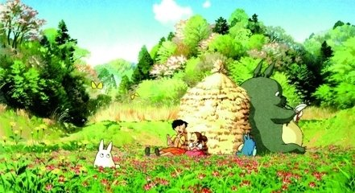

| 请输入邮箱地址 | |
|---|---|
| 邮箱地址请按照要求格式输入 | |
| 请输入密码 | |
| 请重复输入密码 | |
| 密码请为6-16位英文数字 | |
| 性别 | |
| 城市 | |
| 爱好 | |
| 个人描述 | |
宫崎骏原创动画电影
龙猫 -------------
1988年上映宫崎骏原创动画电影
《龙猫》（日语：となりのトトロ）是吉卜力工作室与德间书店于1988年推出的一部动画电影，由宫崎骏所执导。电影描写的是日本在经济高度发展前存在的美丽自然，那个只有孩子才能看见的不可思议世界和丰富的想像，因为唤起观众的乡愁而广受大众欢迎。《龙猫》在1988年4月16日于日本公映，大约有80万人次进入电影院观看，同时上映的还有高畑勋执导的电影《萤火虫之墓》。该作也是宫崎骏电影在中国公映的第二部作品。在作品中出现的“五月和梅伊的家”，亦在2005年日本国际博览会的濑户市会场中展出。
宫崎骏笔下的《龙猫》[1]是对日本乡村生活的迷人及节奏缓慢的描绘。故事背景设定于1958年（昭和33年），一位大学教授“草壁達郎”（草壁タツオ）和他的两个女儿“五月、梅伊”（サツキ、メイ）搬进一个森林附近的一所旧房子，而教授的妻子“草壁靖子”因染上了结核病，在附近的一 所医院康复中。
搬来新家的五月和梅伊，都在家中及附近发现各种奇妙的东西，如家里藏着像是小黑球模样的“煤黑子”（ススワタリ）。而梅伊某一天也在外头发现可以将外表变不见“小龙猫”（チビトト）、为了追赶它而被引领到树洞里发现森林的守护者“大龙猫”（トトロ）；并且在一个下雨的晚上，当五月和梅伊在公车站牌边等爸爸时，她们都遇到了用树叶挡雨、先前梅伊在树洞里看到的大龙猫。
之后有一天梅伊想把一个成熟的玉米带给住在医院的妈妈时、不小心迷了路，当众人都寻便不著后，五月跑去找大龙猫帮忙。之后大龙猫召唤了“猫巴士”（ネコバス），在猫巴士的帮助下 ，梅伊被迅速找到了，并且接送五月和梅伊穿过乡间，到医院探望她们的妈妈